AKM
概述
AKM的补充尝试见五年窗口的事务所分类、潜在客户类型与风险择所。此前的全样本客户GFE和2012—2021年模型保留为前版记录。
本章先集中展示当前客户—事务所sorting：AKM允许的永久类型相关、外生流动条件、组内／组间配置、KSS噪声校正与四大差距；全部三套样本、主要图和支持诊断均已接入。此前完成动态风险GFE与独立静态二元混合，包括重抽样、模拟及Stata核对。后半部分保留既有双边／三方分解及个人审计师可靠性，分别说明各自口径。
客户—事务所sorting：永久类型、估计噪声与内生流动
AKM允许永久客户类型与事务所类型相关；当前新增探索发现，失败指标呈现正组间、负组内，KSS校正后总体点估计仍为负。 本节集中展示原始事务所ID、统一结果与控制口径下的客户—事务所分析。A1身份仅用于共同底样本及33／55资格门槛，不作为本模型的第三个固定效应。后文原有个人审计师及三方分析保留其各自规格。返回memo的研究问题。
AKM允许哪些相关，限制哪些相关？
先区分永久类型sorting与剩余风险引起的动态选择。 Abowd 等 (1999) 的加性框架允许客户的持久失败成分与事务所的稳定结果成分相关。本节将当年事务所记为\(J_{it}=f(i,t)\)，将年份固定效应记为\(\phi_t\)（即其他结果表中的\(\lambda_t\)），模型为
\[ Y_{it}=X_{it}'\beta+\alpha_i+\psi_{J_{it}}+\phi_t+\varepsilon_{it}, \qquad \operatorname{Cov}(\alpha_i,\psi_{J_{it}})\text{ 可以非零}. \tag{1}\]
\(\alpha_i\)表示控制可观察特征后的客户持久失败成分，\(\psi_j\)表示事务所的共同稳定结果成分。长期低风险客户更常选择四大，属于这个模型可以容纳的配置；组间与组内sorting的分解描述这些稳定成分如何配在一起。
真正需要核查的是：当期剩余风险是否影响下一期选所。 直观地写成
\[ \operatorname{Cov}\!\left( \varepsilon_{it},\mathbf1\{J_{i,t+1}=j\} \;\middle|\;\mathbf X_i,\alpha_i,\phi_t \right)\ne0. \tag{2}\]
即使控制客户特征、客户长期不变的风险和共同年份因素，当期未被解释的风险冲击，仍可能与下一期选择哪家事务所相关。例如，客户风险突然上升并随后换所，换所前后的剩余风险变化就可能混入事务所效应的估计。\(\mathbf X_i=(X_{i1},\ldots,X_{iT_i})\)表示客户整个观察期的控制变量路径；\(\alpha_i\)与\(\phi_t\)是通过客户和年份dummy吸收的固定效应，条件中的这些符号不是额外新增的控制变量。事务所配置dummy是协方差的第二个对象，不再放进该式的条件中。
Big4 effect中已经有风险信号与下一期进出的对应证据。 客户组合调整：进入、意见与退出沿用九项控制、mis_dummy、公司和行业×年份固定效应，并按公司聚类：当前四大客户收到非标准审计意见（MAO）后，次年退出概率高30.40个百分点（\(p<0.001\)）；当前非四大客户收到MAO后，次年进入四大的概率低0.249个百分点（\(p=0.039\)）。持续经营意见（GC）对应四大客户次年退出概率高20.62个百分点（\(p=0.042\)），进入差异不显著。这些结果表明客户组合会随已观察到的风险信号调整，为检验动态选择提供动机；风险信号与流动相关是否涉及本模型未吸收的\(\varepsilon_{it}\)，由剩余结果—未来配置诊断进一步考察。
完整的AKM条件要求剩余冲击与整条选所路径正交。 设\(\mathcal F_i=(J_{i1},\ldots,J_{iT_i})\)为完整事务所配置路径，\(\boldsymbol\psi\)、\(\boldsymbol\phi\)为全部事务所与年份效应，严格外生性写为
\[ \operatorname E\!\left[\varepsilon_{it}\mid \alpha_i,\boldsymbol\psi,\boldsymbol\phi,\mathbf X_i,\mathcal F_i\right]=0, \qquad \forall t. \tag{3}\]
它蕴含对任意过去、当前或未来的事务所配置指示变量均有
\[ \operatorname{Cov}\!\left(\varepsilon_{it},\mathbf1\{J_{is}=j\}\mid \alpha_i,\boldsymbol\psi,\boldsymbol\phi,\mathbf X_i\right)=0, \qquad \forall t,s,j. \tag{4}\]
因此，当期剩余风险与下一期配置相关会触及严格外生性。基准AKM可允许同一客户不同年份的误差相关，并按客户聚类，但这些误差仍须满足配置正交条件。共同事务所成分的解释还依赖加性与稳定性；客户类型相关的服务效果和持续匹配收益需要进一步建模。KSS校正处理固定效应估计噪声，当前逐观测版本另需公司年误差独立；动态BLM拓展针对结果与后续选所的反馈。
当前样本、结果及控制变量
观测单位为公司年。底样本要求客户、原始事务所、稳定A1身份与年份有效；不将不合格事务所合并为共同0类。不筛选／33／55分别是不额外施加A1门槛、A1累计报告数与不同执业年份均至少3、均至少5。累计口径在结果缺失剔除前的共同有效身份底样本上计算；每个模型递归去除客户、事务所、年份单例。
未预警重述、未预警违规及未预警综合失败分别为\(Restated\times(1-MAO)\)、\(Violated\times(1-MAO)\)、\(\mathbf1\{Restated=1\text{ 或 }Violated=1\}\times(1-MAO)\)；MAO=1的记录保留为0，各结果要求其原始构成字段非缺失。第四个结果为\(|DA_{Jones}|\)。失败指标控制size、lev、loss、roa、zscore、chg_lev、report_lag、cfo、age；Abs DA控制size、lev、loss、growth、cfo、mtb、accruals；均加入对应缺失指示。在完整主面板先标记缺失、按年中位数插补，再用年度插补后的总体中位数补剩余缺失。
三套综合失败pooled样本如下；四个结果、四种估计范围的完整样本流与省略变量记录见基准估计及样本流。方差协方差按公司年等权、总体方差约定计算。
| 样本 | 公司年 | 客户 | 事务所 | 分量 |
|---|---|---|---|---|
| 不筛选 | 70,339 | 5,628 | 268 | 1 |
| 33 | 65,320 | 5,521 | 247 | 1 |
| 55 | 58,757 | 5,271 | 224 | 1 |
我又做了一些分析：组间与组内配置方向不同
我又做了一些分析，我发现，组间配置与组内配置的方向不同。 按当年四大、本土八大与Other分解同一次全样本拟合，三套样本的失败指标均为正组间协方差、负组内协方差，且负组内项更大。较低的客户失败成分与较低的事务所失败成分在梯队之间相配，而梯队内部的配置呈负相关。因此，四大服务于持久失败倾向较低的客户，与总体客户—事务所插件相关为负可以同时成立。这是新增探索性分析，尚不据此推断服务互补或特定选择机制。
\[ \operatorname{Cov}(\widehat\alpha,\widehat\psi) =\sum_g p_g\operatorname{Cov}(\widehat\alpha,\widehat\psi\mid G=g) +\operatorname{Cov}\!\left(\operatorname E[\widehat\alpha\mid G], \operatorname E[\widehat\psi\mid G]\right). \tag{5}\]
该恒等式分解的是协方差，相关系数不按同一方式相加。以下协方差列乘10,000，相关系数不缩放。重述与违规分别估计时组间项也为正；Abs DA的组间项为负，需要单独解释。
| 样本 | 插件相关 | 组内协方差×10,000 | 组间协方差×10,000 | 总体协方差×10,000 | 逐观测KSS相关 |
|---|---|---|---|---|---|
| 不筛选 | -0.0322 | -1.7039 | 0.7969 | -0.907 | -0.002 |
| 33 | -0.0445 | -2.1347 | 0.8222 | -1.3125 | -0.0177 |
| 55 | -0.0574 | -2.5065 | 0.8051 | -1.7014 | -0.0315 |

同一FE的组内条件相关与在组内重新估计是两个对象。 前者在统一pooled模型中按梯队计算；后者仅用该组保留的客户历史，样本及流动支持随之变化。综合失败在三个梯队内均为负，当前结果没有显示四大内部正相关。Other单独估计有两个连通分量，使用分量内中心化的二阶矩，分量之间的FE水平不作直接比较。分组明细与组内估计支持损失逐项保留。
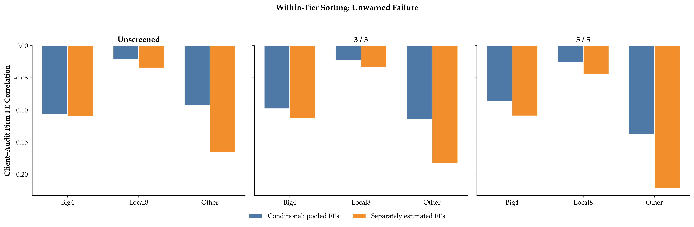
四大观察差距的稳定成分
客户与事务所稳定成分共同对应四大较低的未预警综合失败率，可观察成分抵消部分差距。 不筛选样本中，观察差距为−3.687个百分点，客户与事务所成分分别为−5.148和−2.064个百分点。以下所有项来自同一估计样本，并加总为观察差距；事务所成分的因果解释依赖前述外生性与加性条件，不把各项转换为因果selection／treatment比例。
| 样本 | 观察差距 | 客户FE | 事务所FE | 年份FE | 控制变量 | 残差 |
|---|---|---|---|---|---|---|
| 不筛选 | -3.687 | -5.148 | -2.064 | -0.074 | 3.599 | 0 |
| 33 | -3.681 | -5.168 | -2.119 | -0.048 | 3.655 | 0 |
| 55 | -3.538 | -5.443 | -1.955 | -0.018 | 3.878 | 0 |

完整结果还包括四大减本土八大、四大减Other及另外三个结果，见差距成分与同一样本的方差分解。控制变量成分为整组\(X\widehat\beta\)，其正贡献不归因于某一个单独机制。
网络、关键客户与信息量检查
三套综合失败pooled网络均连通。跨所客户分别为3,400、3,224、3,013位，其中连接四大与非四大的客户分别为439、425、378位。递归单例剔除前的覆盖见前置网络，各事务所支持与梯队流动见事务所明细及转换表。
| 样本 | 跨所客户 | 四大桥接客户 | 客户割点 | 最大分量公司年占比 |
|---|---|---|---|---|
| 不筛选 | 3,400 | 439 | 14 | 1 |
| 33 | 3,224 | 425 | 8 | 1 |
| 55 | 3,013 | 378 | 8 | 1 |
逐一删除客户割点、主要跨所客户及关键客户—事务所关系，共447次重估。综合失败相关系数的最大绝对变化在三套样本中分别约0.00192、0.00113、0.00154；个别删除会令最多两家事务所失去支持。下表同时报告其他结果，不能仅凭总体变化较小忽略边缘事务所的支持损失。删除明细。
| 样本 | 结果 | 重估次数 | 相关最大绝对变化 | 最多损失事务所 |
|---|---|---|---|---|
| 不筛选 | 综合失败 | 49 | 0.00192 | 2 |
| 不筛选 | 重述 | 49 | 0.00435 | 2 |
| 不筛选 | 违规 | 49 | 0.00301 | 2 |
| 不筛选 | Abs DA | 32 | 0.00117 | 1 |
| 33 | 综合失败 | 36 | 0.00112 | 2 |
| 33 | 重述 | 36 | 0.00495 | 2 |
| 33 | 违规 | 36 | 0.00141 | 2 |
| 33 | Abs DA | 28 | 0.00157 | 1 |
| 55 | 综合失败 | 36 | 0.00154 | 2 |
| 55 | 重述 | 36 | 0.00553 | 2 |
| 55 | 违规 | 36 | 0.00107 | 2 |
| 55 | Abs DA | 24 | 0.0022 | 1 |
保留较少客户历史时，插件相关更负；增加信息后向全样本结果靠近。 按完整客户历史抽取10%至100%，使用50个种子，100%每个模型只拟合一次。共16,848次拟合：16,772次有效，36次秩不足，40次FE无变异；后两类保留状态但不进入相关统计。综合失败pooled在10%与100%的中位数分别由约−0.27至−0.30，靠近−0.03至−0.06。抽样同时改变信息量、组成和网络，曲线本身不构成纠偏。分位数与覆盖。
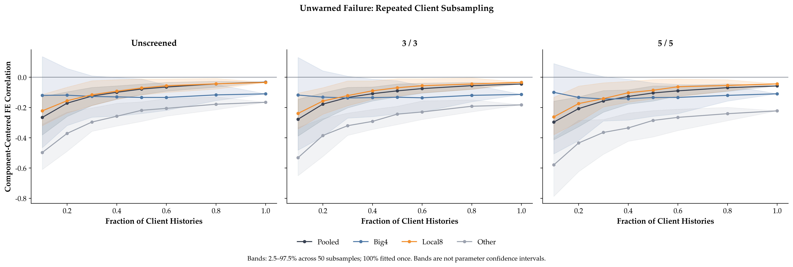
另外三个结果的重复抽样图
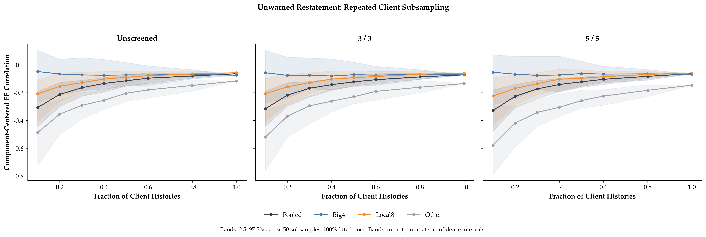
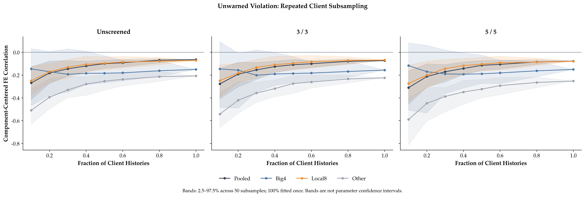
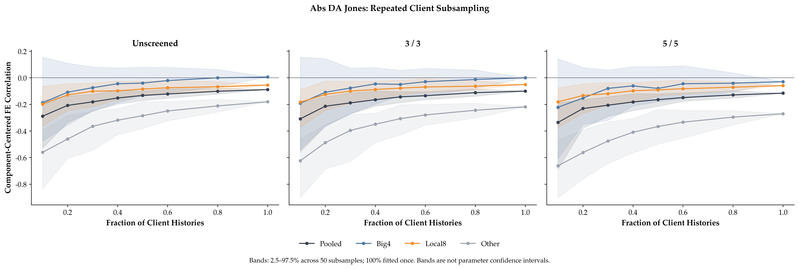
共同实体FE比较先匹配同一客户或事务所，再在抽样分量内归一化。50%样本中，综合失败事务所FE的实体等权Pearson中位数约0.80，客户FE约0.99。两次估计有数据重叠，因此这是抽样敏感性指标。完整实体比较。
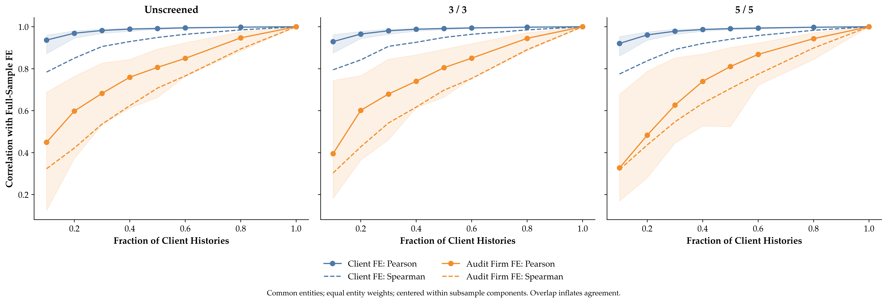
KSS：量级减弱，点估计方向保持为负
Kline 等 (2020) 的leave-out方法针对固定效应二次型的估计偏误。本轮同时校正客户方差、事务所方差与协方差；综合失败相关在不筛选、33、55样本中分别由−0.0322、−0.0445、−0.0574变为−0.0020、−0.0177、−0.0315。校正明显减弱负相关的绝对量级，三套样本的点估计符号均保持为负。 不筛选样本已接近0；因尚无完整客户聚类稳健置信区间，符号一致不等于统计上确认了负sorting。三个二次型的完整结果。

逐观测误差方差估计为\(\widehat\sigma_k^2=Y_k\widehat\varepsilon_k/(1-h_{kk})\)，不是用残差平方直接替代。最大leverage约0.999，虽然小于1，局部估计仍可能对噪声敏感。整位客户留出时，综合失败三套设计分别有14、8、8个客户造成变换设计失秩；完整客户聚类推断需另行处理这些支持问题。留出可行性及高leverage记录。KSS处理估计噪声，内生换所问题见以下两条研究方向。
从剩余风险影响后续选所，到动态BLM
动态BLM将结果影响后续配置的反馈纳入模型。 Bonhomme 等 (2019) 的静态模型允许客户类型与事务所类型非加性交互，动态模型进一步允许当前结果影响后续是否流动及目的地，并允许后续结果依赖当前结果和原事务所类型。1 这使“风险上升后换所”成为待建模的选择过程，而无需继续要求AKM剩余冲击与全部未来配置正交。
用审计语境作示意，令\(a_i\)为客户潜在类型、\(k_{it}\)为当年事务所类型、\(M_{it}=\mathbf1\{J_{i,t+1}\ne J_{it}\}\)为下一期是否换所。两类条件分布分别描述配置与结果：
\[ \Pr\!\left(M_{it}=m,k_{i,t+1}=k'\mid a_i,k_{it},Y_{it},X_{it}\right) =p_t(m,k'\mid a_i,k_{it},Y_{it},X_{it}), \tag{6}\]
\[ \Pr\!\left(Y_{i,t+1}=1\mid a_i,k_{i,t+1},k_{it},Y_{it},X_{i,t+1},M_{it}\right) =q_t\!\left(a_i,k_{i,t+1},k_{it},Y_{it},X_{i,t+1},M_{it}\right). \tag{7}\]
以上是把原文思路用于二元审计失败的示意式，并非已经估计的完整模型。第一式允许相同客户类型和原所类型下，当期结果不同的客户有不同换所概率及目的地；第二式允许换所后的结果延续此前风险，并受到原所与新所类型的共同影响。潜在类型与事务所类型之间还可存在非加性关系，因此不同客户类型不必具有相同的事务所排序。
它处理内生选择的依据，是以明确的动态限制识别结果与配置的联合分布。 在类型给定后，当前状态概括与下一期有关的历史，即一阶Markov限制；换所与留任客户的连续结果序列用于区分持久类型、状态延续与配置差异。原文动态识别使用四期数据，并要求类型可区分及相应转移支持。只做类型聚类或在结果回归中加入滞后风险，尚未建立这一套联合识别。
迁移到本项目时，需要核准风险信号、审计结果和选所决定的信息时序：把后来披露的失败归入发生财年，不能据此认定决定时已经知道该失败。二元失败是否提供足够的状态与潜在类型信息，也需单独检查。动态BLM能够容纳满足这些结构与支持条件的选择；当前状态无法概括的私人风险或更长历史，需要额外建模。
现有诊断与估计进展。 本项目已沿用 Abowd 等 (2019) 的剩余结果—流动思路完成未来配置诊断，在同一样本中重新吸收全部基准FE和controls，按客户聚类；其考察剩余成分与未来换所、未来四大身份的关系。前期收费CDF分类及配对结果属于描述性分类与类型交互探索，另行估计的动态风险GFE和静态两类型Bernoulli混合为已有探索分支。当前已完成共享客户类型与上一年财务风险的最小联合模型，其具体方程与结果见下节；原文动态结构的完整二元适配仍需另外建立；连续序列支持检查用于评估这一拓展的数据基础。
剩余结果—未来配置诊断
\[ Y_{it}=\alpha_i+\psi_{f(i,t)}+\lambda_t+X_{it}'\beta +\delta_h\mathbf1\{f(i,t+h)\ne f(i,t)\} +\gamma_h\mathbf1\{Big4_{i,t+h}=1\}+u_{it}, \qquad h\in\{1,2\}. \tag{8}\]
联合检验\(H_0:\delta_h=\gamma_h=0\)。综合失败的一年期在三套样本均未拒绝；两年期不筛选样本原Python联合\(p=0.00790\)，按综合失败六项检验校正后为0.04737，扩展至全部四个结果的24项检验后为0.18159。信号对检验族范围敏感，也未在33与55中重复出现；不据此接受严格外生性或确认某种选择机制。
| 样本 | 期数 | 原始联合p | 六项Holm p | 24项Holm p |
|---|---|---|---|---|
| 不筛选 | 1 | 0.45007 | 0.98646 | 1 |
| 不筛选 | 2 | 0.0079 | 0.04737 | 0.18159 |
| 33 | 1 | 0.46444 | 0.98646 | 1 |
| 33 | 2 | 0.17589 | 0.87947 | 1 |
| 55 | 1 | 0.32882 | 0.98646 | 1 |
| 55 | 2 | 0.21394 | 0.87947 | 1 |
Stata与Python均按客户聚类。原Python按完整设计秩扣除自由度，reghdfe默认不重复扣除嵌套于客户聚类的客户FE；这导致默认标准误略有不同，统一自由度因子后标准误一致。上表延续原Python约定；全部结果与两种默认约定、逐系数核对均保留。
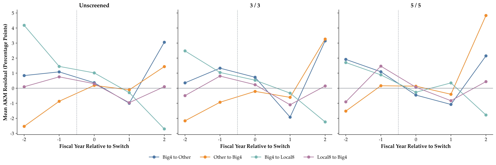
动态模型的序列与日期支持
四期连续窗口要求原所两年、目的所两年，中间实际换所。综合失败三套样本的窗口数、涉及客户／事务所以及出现过正事件的窗口如下。二元端点的\(2\times2\)联合分布矩阵最多秩2，状态稀疏使更多潜在类型的识别依赖额外测量或分布设定。四结果完整序列支持与包括空格子的状态表。
| 样本 | 窗口 | 客户 | 事务所 | 正事件窗口 |
|---|---|---|---|---|
| 不筛选 | 5,146 | 2,553 | 201 | 772 |
| 33 | 4,015 | 2,279 | 168 | 599 |
| 55 | 3,192 | 1,970 | 154 | 469 |
下表保留前期的原始改聘ID对候选支持，当时尚未把逐次改聘与风险披露日期接入模型。该候选表没有限定具体生效财年，同一ID对可能有多年重复事件，因此属于覆盖上限。本轮已完成年度地标风险集与日期核准改聘样本的实际估计，同时明确变更记录日期仍不等于普遍可见的最初决策日。前期日期来源覆盖、前期候选日历偏移。
| 样本 | 年度换所 | 有ID对候选 | 有变更日期候选 | 有多个变更日期 |
|---|---|---|---|---|
| 不筛选 | 9,218 | 6,630 | 5,800 | 2,002 |
| 33 | 7,356 | 5,409 | 4,721 | 1,594 |
| 55 | 5,927 | 4,260 | 3,676 | 1,182 |
前期准备诊断之后，本轮已按后续确认的方案运行动态状态GFE与静态二元混合，并完成模拟、重抽样与时点检查。原文完整动态结构的续聘时点与私人信息识别条件仍未由现有数据提供。
执行核对与全部结果下载
本段旧AKM主输入为公司年度正式面板与auditor_team_features，SHA256记录在输入manifest。旧分支已运行48个基准／分梯队模型与24个未来配置模型；Stata—Python逐行核对公司年、原始事务所与稳定A1身份、变量构造、连通分量及归一化成分通过，拟合值最大差异约\(4.44\times10^{-9}\)。跨语言执行记录、完成检查。这些旧结果保留；本轮另行实际运行的新估计、输入哈希和完整执行记录见动态风险分支。
全部当前规格CSV、Stata输出与复现代码
- audit_firm_support
- baseline_fit
- big4_gap
- common_entity_fe_stability
- control_imputation
- dynamic_binary_state_cells
- dynamic_binary_state_cells_complete_grid
- dynamic_sequence_support
- dynamic_timing_audit
- future_assignment_joint_multiplicity
- high_leverage_observations
- key_client_relationship_deletion
- kss_feasibility
- kss_observation_leaveout
- network_support
- pre_singleton_network_support
- raw_timing_source_coverage
- repeated_client_subsampling
- repeated_client_subsampling_summary
- residual_future_assignment_tests
- residual_serial_diagnostic
- sample_flow
- stata_python_mobility_check
- stata_python_observation_check
- stata_python_table_check
- switch_date_candidate_support
- switch_date_candidate_year_offsets
- switch_residual_paths
- tier_estimation_support_loss
- tier_transitions
- variance_components
- within_between_sorting
- completion_checks
- diagnostic_run_manifest
- mobility_run_manifest
- numerical_validation
- presentation_run_manifest
- run_manifest
- stata_integration_manifest
- baseline_fit
- big4_gap
- residual_future_assignment_tests
- sample_flow
- within_between_sorting
作为AKM补充的最小模型：客户类型sorting与短期风险择所
前面的AKM允许长期客户类型与事务所稳定成分相关，进一步的问题是当期剩余风险可能影响后续换所。 针对这一反馈，我参考 Bonhomme 等 (2019) 的估计思路做了一个客户—事务所的最小模型尝试，作为AKM的补充。BLM通过双方类型交互放宽加性，并在动态模型中将当前工资与后续流动的联系纳入一阶Markov结构，在其识别条件下处理这一部分内生流动。这里借鉴它“先分类事务所、再由流动与结果估计客户潜在类型”的两步思路，并将上一年财务状态同时放入结果和配置方程，分别考察长期类型sorting与短期风险相关的换所。当前模型把可观测财务风险相关的选择纳入联合似然，给定类型和状态后仍限制未观测选择与结果冲击的相关性。
从工资市场到客户—事务所：参考了什么？
Bonhomme、Lamadon和Manresa（2019）研究瑞典劳动者—雇主匹配与工资差异。作者先根据雇主内部的工资分布，用K-means划分雇主类别，再结合劳动者在雇主之间的流动和工资结果，以有限混合模型估计劳动者潜在类型、类型构成以及不同配对下的工资分布。静态模型允许劳动者类型与雇主类别非加性交互；动态模型进一步允许工资实现影响后续流动，并使后续工资依赖原雇主及当前状态。2
本项目的对应关系是：劳动者对应上市公司客户，雇主对应审计事务所，工资结果对应二元审计失败结果。原文按工资分布分类；这里按客户财务分布分类。以下公式写的是本次实际估计的二元适配模型：当前流动方程使用上一年财务风险，未把后来披露的失败结果作为选所时已知的状态。
第一步：按客户财务分布，对审计事务所做K-means分类
将样本按1990—94、1995—99等日历五年分段，窗口记为\(b\)。对客户\(i\)、年份\(t\)，先把上一年负债率、ROA、经营现金流／资产、Z-score和规模转换成同年客户中的百分位\(r^v_{it}\)；同年的含义是同一择所年度，对应财务数据为\(t-1\)年。每家事务所\(j\)在窗口内的客户分布用九个CDF取值表示：
\[ \widehat F_{jbv}(u)= \frac{\sum_{(i,t)\in\mathcal I_{jbv}}\mathbf1\{r^v_{it}\le u\}} {|\mathcal I_{jbv}|},\qquad u=0.1,0.2,\ldots,0.9. \]
\(\mathcal I_{jbv}\)为该窗口内由\(j\)审计、且第\(v\)项财务变量可观察的公司年。五项分布组成45维向量\(C_{jb}\)。在五项分布均有资料的事务所中，估计四个中心和类别：
\[ \min_{\mu_1,\ldots,\mu_4;\,c_{jb}\in\{1,2,3,4\}} \sum_j n_{jb}\|C_{jb}-\mu_{c_{jb}}\|^2. \]
\(n_{jb}\)是事务所的公司年数。程序使用30次初始化，选择加权组内平方距离最小的结果。事务所类别在五年内固定，跨窗口可以变化；四大和八大标签只用于事后解释。Class 1—4是事务所类别，编号不代表审计质量高低；Type 1—2在下文表示客户潜在类型，两者不是同一套分类。 第一阶段使客户分布接近的事务所归为一类，所以这些分布本身的差异不能单独作为新的sorting证据。
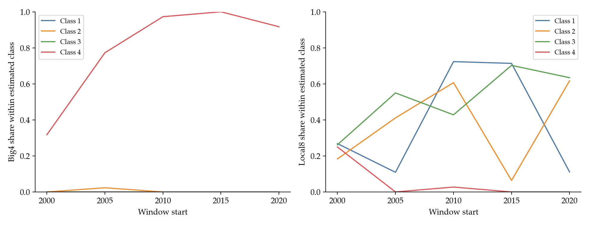
第二步：从流动与结果估计客户潜在类型及sorting
在每个窗口内，令\(L_i\in\{1,2\}\)为客户固定潜在类型，\(K_{it}=c_{J_{it},b}\)为当前事务所类别。客户不再做K-means；其类型通过结果与流动的有限混合似然估计，另估计一类型模型作对照。
静态换所端点基准。 每个客户—窗口取第一对合格换所端点\(s,t\)，原、目的事务所类别为\(a,b\)：
\[ \Pr(Y_{is}=y_s,Y_{it}=y_t\mid K_{is}=a,K_{it}=b) =\sum_{\ell=1}^{2}\pi_{\ell,ab} B(y_s;\theta_{\ell a})B(y_t;\theta_{\ell b}), \qquad B(y;p)=p^y(1-p)^{1-y}. \]
\(\theta_{\ell k}\)是类型\(\ell\)在事务所类\(k\)中的失败概率；\(\pi_{\ell,ab}\)是这条换所路径上的客户类型比例，路径间可以不同。对全部客户端点的对数似然求和并最大化，同时估计概率与路径构成。另用不重叠追踪窗的端点估计同一模型。
年度结果模型。 为利用窗口内更多年份，结果方程写为
\[ p^Y_{it\ell}=\Pr(Y_{it}=1\mid L_i=\ell,K_{it},R_{it},H_{it}) =\Lambda(a_{\ell,K_{it}}+R_{it}'\beta+H_{it}'\gamma), \qquad \Lambda(z)=\frac{e^z}{1+e^z}. \]
\(Y_{it}\)是签字后三年成熟窗口内的未预警重述或违规指标；\(R_{it}\)是五项\(t-1\)财务百分位经\(2r-1\)变换后的状态。缺失风险取中位位置0，并加入缺失指示变量。\(H_{it}\)包括年份、原所类别及其缺失指示、此前已完成关系年限的变换及缺失指示。\(a_{\ell k}\)允许两种客户在不同事务所类别中具有不同结果。财务风险系数在类型之间共同；潜在类型仅在该五年窗口内保持不变。
初始类型概率以窗口内首次观察到的事务所类、财务状态及缺失指示\(Q_i\)建模：\(\pi_{i2}=\Lambda(Q_i'\zeta)\)，\(\pi_{i1}=1-\pi_{i2}\)。结果单独估计版本（outcome_only）最大化
\[ \mathcal L_i^Y=\sum_{\ell=1}^{L}\pi_{i\ell} \prod_{t\in\mathcal T_i^Y}B(Y_{it};p^Y_{it\ell}),\qquad L\in\{1,2\}. \]
它是年度结果基准；下面的联合版本再加入是否换所及目的地信息。
第三步：同一客户类型与年度财务风险进入配置方程
令\(M_{it}=\mathbf1\{J_{it}\ne J_{i,t-1}\}\)为是否更换真实事务所ID；换到同类中的另一家事务所也算换所。定义
\[ p^M_{it\ell}=\Pr(M_{it}=1\mid L_i=\ell,R_{it},H_{it}) =\Lambda(c_\ell+H_{it}'\eta+R_{it}'\lambda). \]
对已经换所的客户，目的地就是换所后当前的事务所类别，采用四类多项logit：
\[ d_{it\ell k}=\Pr(K_{it}=k\mid M_{it}=1,L_i=\ell,R_{it},H_{it}) =\frac{\exp(v_{it\ell k})}{\sum_{h=1}^{4}\exp(v_{it\ell h})}, \qquad v_{it\ell k}=d_{\ell k}+H_{it}'\xi_k+R_{it}'\omega_k. \]
以第1类为基准，将其指数标准化为0。这里既允许客户类型影响换所和目的地，也允许上一年财务状态在相同类型下影响配置。基准联合版本（joint_persistent）令\(\lambda=0,\omega_k=0\)，风险联合版本（joint_risk）估计这些系数；两个版本的结果方程均控制\(R_{it}\)。
联合似然为
\[ \mathcal L_i= \sum_{\ell=1}^{L}\pi_{i\ell} \left[\prod_{t\in\mathcal T_i^Y}B(Y_{it};p^Y_{it\ell})\right] \left[\prod_{t\in\mathcal T_i^M}B(M_{it};p^M_{it\ell})\right] \left[\prod_{t\in\mathcal T_i^D}d_{it\ell,K_{it}}\right], \qquad\widehat\vartheta=\arg\max_\vartheta\sum_i\log\mathcal L_i. \]
\(\mathcal T_i^Y\)仅包含可观察的成熟结果，\(\mathcal T_i^M\)仅包含原所可识别的年度转移，\(\mathcal T_i^D\)是其中实际换所的年份；每个客户—窗口首次记录不进入流动项。采用12个两类型初始值并保留较高似然解。joint_risk_nonoverlap使用同一方程和全部流动，但只让追踪区间不重叠的结果进入\(\mathcal T_i^Y\)，减少三年追踪窗口重复进入的情况。
sorting如何从模型得到？ 将类型\(\ell\)的初始概率乘以该类型下的结果和流动似然，并对两类归一化，得到客户后验类型概率\(\tau_{i\ell}\)。在有成熟结果的公司年中，按当前事务所类别求平均：
\[ \widehat q_{\ell\mid k} =\frac{\sum_{(i,t)\in\mathcal T^Y}\mathbf1\{K_{it}=k\}\widehat\tau_{i\ell}} {\sum_{(i,t)\in\mathcal T^Y}\mathbf1\{K_{it}=k\}}. \]
各类事务所的\(\widehat q_{\ell\mid k}\)是否相同，直接描述客户类型的配对分布。它是按公司年加权的后验构成，不是给客户硬分组后数人数。Type 1／2按模型在共同财务参考下、四类事务所中平均预测失败概率由低到高编号；Type 2并不要求在每类事务所中都比Type 1高，跨模型的同名类型也不保证对应同一批客户。
结果一：长期客户类型在事务所之间的配置
2015—2019年，四大所在类别的Type 2占比低于另外三类。 不筛选样本的风险联合模型中，Class 1至4的Type 2占比分别为17.3%、29.9%、17.5%和3.4%，该窗口Class 4全部为四大。下图浅蓝表示Type 1、深蓝表示Type 2，每根柱子加总为100%。

改变结果进入似然的方式，类型构成和条件失败概率会重新分配。 同一2015—2019年窗口，改用不重叠追踪窗结果后，Class 1至4的Type 2占比分别变为47.2%、55.0%、24.7%和4.3%；Class 4仍最低，但其他类的占比变化较大。Class 2中Type 2的共同参考失败概率同时由33.9%变为11.7%。两次估计的Type 2只按各自平均失败概率排序，不能将占比变化解释成同一批客户风险发生了变化。
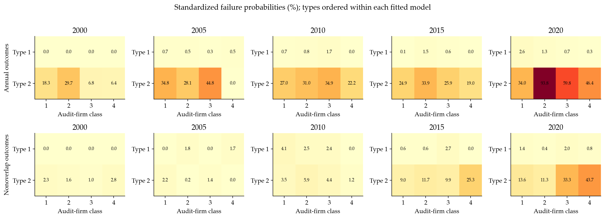
结果二：上一年财务风险与当年换所
ROA较低的客户具有更高的模型预测换所概率。 在2015—2019年和2020—2024年，将上一年ROA从同年第25百分位提高至第75百分位，其他状态和预测用类型权重固定，平均换所概率分别下降4.06和3.04个百分点。配置预测的类型权重只使用初始状态与此前流动，不使用未来失败结果。
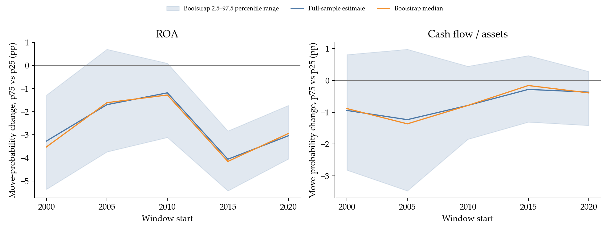
2015—2019年和2020—2024年的ROA重抽样范围分别为−5.42至−2.83、−4.04至−1.73个百分点；2005—2009年和2010—2014年的范围跨0。经营现金流的换所效应在五个窗口的重抽样范围均跨0。ROA对应进入Class 4的配置概率变化，在2015—2019年为−0.085个百分点、2020—2024年为+0.062个百分点，相应重抽样范围均跨0，因此换所关系尚不能直接推出四大筛除低盈利客户。
估计条件和当前结果的具体限制
在给定客户类型、观察到的财务状态及控制变量后，联合似然将各年结果和配置写成条件概率的乘积。财务状态路径作为条件，风险过程本身没有另建方程；类型以外的持续冲击、或事务所掌握但数据未记录的私人风险，若同时影响配置与失败，就超出这一条件分解。当前数字描述这套模型下的类型构成与风险相关流动。
静态端点的27个两类型拟合均在估计点出现局部概率Jacobian秩小于参数数目；年度联合模型在2015—2019年Class 4的Type 1共同参考失败概率约为\(3.6\times10^{-9}\)，接近0。前述年度／不重叠结果比较给出了类型分解改变的具体幅度。三套样本共120个年度拟合达到程序记录的收敛标准，收敛检查与这些支持、边界检查分别报告。类型与财务状态少见的组合还会使共同参考概率依赖模型外推。
补充：全部窗口覆盖、流动支持、风险效应与留出预测
不筛选／33／55沿用A1累计报告数和不同执业年份的资格口径，不在每个五年窗口内重新计算。五项客户分布中任何一项完全缺资料的事务所保持未分类；分类不要求客户三份历史或成熟结果。
| 窗口起点 | 有滞后财务资料 | 已分类公司年 | 成熟失败标签 | 失败次数 |
|---|---|---|---|---|
| 1990 | 223 | 0 | 0 | 0 |
| 1995 | 2456 | 0 | 0 | 0 |
| 2000 | 5301 | 5175 | 4997 | 58 |
| 2005 | 6947 | 6947 | 6826 | 111 |
| 2010 | 11162 | 11162 | 11118 | 371 |
| 2015 | 15710 | 15709 | 15707 | 693 |
| 2020 | 23421 | 23421 | 8123 | 395 |
1990—1999年因Z-score整项缺失保持未分类。2020—2024年保留全部可用流动信息，成熟结果仅覆盖较早年份，未知结果不填零。无最小客户数、失败次数或配置概率修剪。财务百分位在全市场同年计算，未在行业内重排；行业构成另列。
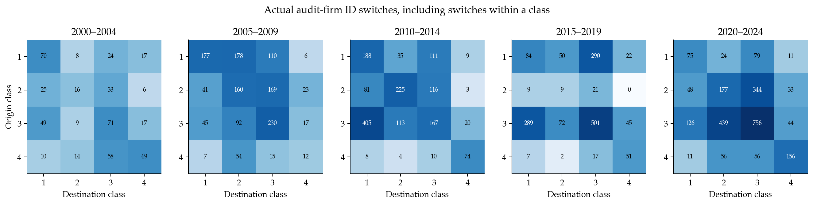
下表为各财务变量从第25到第75百分位的平均预测换所概率变化，单位为百分点。
| window | lev | roa | cfo | zscore | size |
|---|---|---|---|---|---|
| 2000 | 0.13 | -3.269 | -0.945 | -0.676 | -1.181 |
| 2005 | 1.566 | -1.698 | -1.235 | 0.114 | -0.384 |
| 2010 | 0.543 | -1.185 | -0.787 | 0.642 | -2.348 |
| 2015 | 2.138 | -4.056 | -0.284 | 2.559 | -0.047 |
| 2020 | 1 | -3.043 | -0.371 | 0.259 | 0.57 |
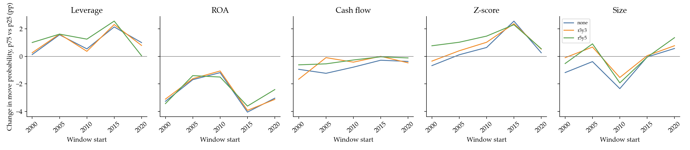
三折按客户整体留出，第一步类别固定。两类型模型加入风险后的择所log-score增益，2010、2015、2020起点窗口的三折范围分别为0.00134—0.00298、0.00328—0.00643、0.00148—0.00931，均大于0；2000、2005起点窗口分别为−0.01583—0.01577、−0.00058—0.02035，跨0。
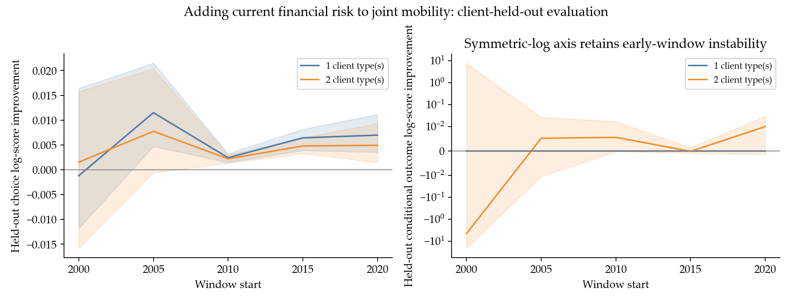
主样本每窗口100次整段客户重抽样，共500次，每次两个起点，固定事务所分类。下表ROA单位为百分点；经验分位范围在混合模型边界下不保证常规置信区间覆盖率。
| window | converged_replications | median | p025 | p975 |
|---|---|---|---|---|
| 2000 | 100 | -3.523 | -5.355 | -1.284 |
| 2005 | 100 | -1.611 | -3.738 | 0.698 |
| 2010 | 100 | -1.279 | -3.114 | 0.092 |
| 2015 | 100 | -4.15 | -5.423 | -2.835 |
| 2020 | 100 | -2.945 | -4.045 | -1.729 |
完整数学和执行说明 · 窗口覆盖 · 静态端点诊断 · 联合模型诊断 · 客户类型构成 · 类型—类别有效支持 · 行业构成 · 风险效应 · 留出客户验证 · 重抽样范围
本地估计入口为code/python/client_auditfirm_window_mixture.ipynb；本节为Python结果，旧AKM的Stata结果保留。
前版全样本GFE：年度滞后风险、客户分组与共同支持
本节采用用户确认后的全样本年度口径；下方2012—2021年、按公开日期筛选的结果保留为前版记录。 当前使用全部符合结果窗口、历史资料及滞后变量要求的年份，不再设2012起点。风险状态取财年\(t-1\)，较早状态取\(t-2\)；历史取最早3／5份有信息的财务记录，不要求年份连续，缺失按训练样本尺度处理。财务公开日期及改聘日期不再作为入样门槛。结果仍为签字后三年成熟窗口内的未预警失败。
| gate | n | clients | start | end | failures | big4_events | groups |
|---|---|---|---|---|---|---|---|
| none | 40789 | 3717 | 1993 | 2021 | 1469 | 23 | 1 |
| r3y3 | 38668 | 3711 | 1993 | 2021 | 1378 | 23 | 1 |
| r5y5 | 36294 | 3676 | 1994 | 2021 | 1274 | 22 | 1 |
分组到底按什么：五维K-means，PCA仅用于画图
客户\(i\)的分类向量为
\[ H_i=(\overline{Lev}_i,\overline{ROA}_i,\overline{CFO}_i, \overline{Zscore}_i,\overline{Size}_i). \]
历史值先按训练客户的中位数和IQR变换，并使用asinh尺度。给定候选组数\(G\)，求
\[ \min_{\mu_1,\ldots,\mu_G;\,g_i\in\{1,\ldots,G\}} \sum_i\|\widetilde H_i-\mu_{g_i}\|^2. \]
每个客户分到五维距离最近的中心。此步不使用客户失败结果或是否四大；结果预测用于后续组数选择。\(G=1\)表示全部客户同一个组，\(G=2\)才是两个颜色的两组。事务所始终另分四大、本土八大和Other三类。此前的主线是财务历史分组GFE，与独立静态二元混合从结果序列推断潜在类型的步骤不同。
图左的两个主成分只用于展示已分好的客户，颜色并非按主成分左右切分。图右是实际参与分组的五个变换后特征中心。

全样本允许两组，最终选择仍受简约规则影响
验证改为客户五折：同一客户所有年份在同一折，每次仅用训练折拟合历史尺度、K-means中心、状态尺度和结果模型，再预测留出客户；每个合格公司年都被留出预测一次。没有额外日期起点。这检验跨客户预测，不是前版的未来年份预测，损失不能与前版直接比较。组数候选保持P2与线性时间趋势；选定后P3结果方程在全样本重估并使用年份固定效应。
全部样本重新训练的两组候选中，四大单元分别有7／810和16／1,954次失败／公司年。两组已通过训练折中每单元至少40个观测、2次失败的支持条件。
| Historical records | G = 1 loss | G = 2 loss |
|---|---|---|
| 3.000000 | 0.147880 | 0.147960 |
| 5.000000 | 0.151660 | 0.151614 |
三份历史下一组略好；五份历史下两组略好。既定规则把损失相差不超过0.0002视为近似平局并选较少组，因此主规格仍选一组。三组在部分比较中预测损失更低，但有训练单元仅一次失败；四组仍有零事件单元。数值复核后120个训练折模型均达到收敛标准，部分候选仍有参数边界标记；不能把计算收敛等同于稳定识别。选择一组不证明没有客户异质性或sorting。

为什么共同支持只保留一部分客户
结果模型使用全部合格观测估计。共同支持另行限定标准化预测差距的参考人群：
\[ e_k(Z_{it})=\Pr(K_{it}=k\mid Z_{it}),\qquad \mathcal O=\{(i,t):\min_k\widehat e_k\ge0.01,\ \max_k\widehat e_k\le0.98\}. \]
\(Z\)包含上一年事务所梯队。这个门槛要求同一客户在相同风险和原所状态下，三类配置概率都不太低；不要求每个事务所的客户都相似。它不决定客户分组数，也不是BLM估计的必需步骤。
全样本含原所状态时保留6,327／40,789个公司年（15.51%）。预测四大概率低于1%的观测有33,144个，本土八大低于1%有971个，Other低于1%有2,248个；这些排除人数可能重叠。原本土八大和原Other客户的预测四大概率中位数分别约0.357%和0.230%。
只在诊断中去掉原所梯队，其余变量保持一致，保留人数升至27,235（66.77%）。这表明控制原所后的配置持续性与三类同时支持要求显著缩小参考人群；删去该控制不自动解决内生择所，主规格仍保留它。

本轮已运行全样本候选分组、P3结果、换所、目的地与配置模型，并更新Notebook。这里只报告当前分组与支持结论；未重跑全样本bootstrap、静态混合和模拟，也未运行Stata。前版的区间不能移用于本节全样本点估计。
前版2012—2021年：动态风险GFE与静态二元混合
本轮已经运行动态风险分步模型、静态二类型二元混合、真实数据敏感性、模拟恢复与客户重抽样，并用Stata独立核对主方程。 两条路线分别报告。这里的动态风险GFE借鉴 Bonhomme 等 (2022) 的历史分组思路，以可见状态描述当期配置；静态混合借鉴 Bonhomme 等 (2019) 的类型及配对分布思路。二者均不等同于已完成原文的全部动态结构估计。
时间、样本与结果的实际覆盖
保留原始客户与事务所身份，并严格沿用不筛选／33／55的A1累计报告数与不同年份资格。分类只用进入估计前的3年／5年连续财务历史；共同分类中心只用2012年前已公开的历史训练。正式结果覆盖2012—2021财年，2012—2017用于拟合选择，2018—2019用于组数验证，2020—2021保留作时间外测试。主结果是原有重述／违规定义与“签署后3年内合格披露”的交集，再乘以MAO=0；签署日起3年尚未观察完整的记录不进入估计。MAO=1保留为0。重复披露逐条核对，查找签署后的首次合格披露；不能用签署前的一次披露阻断后续事件。原始无限发现窗标签另估作对照。
现有数据未完整覆盖续聘决策日。 主风险集采用目标财年1月1日的年度地标，财务信息公布日严格早于该日，已知在地标前决定或财年后决定的换所另行剔除；它估计年度配置的条件关联。另有日期核准的真实改聘者单独估计目的地与结果，不能为其补造未换所客户的决策日。供应商财务快照虽然按公布日对齐，历史修订前原始值仍未普遍恢复。少量无法构造完整非Z-score状态的记录单列剔除；金融客户等Z-score缺失仍保留并带缺失标记。
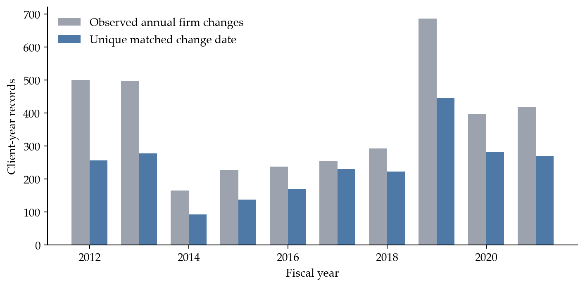
日期核准的改聘结果样本分别有1,545／1,463／1,342条记录，仍存在结果方程边界。日期覆盖改善了时点核准，却没有增加足够的二元事件来保证有限估计；该分支因此作为有边界标记的敏感性，不替代年度主规格。
| gate | n | events | firms | outcome_converged | outcome_boundary | destination_converged | max_gradient |
|---|---|---|---|---|---|---|---|
| none | 1545 | 94.000 | 50 | True | True | True | 0.000 |
| r3y3 | 1463 | 84.000 | 48 | True | True | True | 0.000 |
| r5y5 | 1342 | 77.000 | 44 | True | True | True | 0.000 |
当前风险怎样关联换所和目的地
换所使用logit，目的地在真实换所者中使用三类multinomial logit；同一梯队内换到另一家事务所也算换所。合作年限只使用上一期已完成合作记录。下面把风险从训练分布第25分位改为第75分位，在相同状态样本中平均；多维风险分别展示，不把四项视为四种独立类型测量。
| 样本 | 风险变量 | IQR换所变化(pp) | 下限 | 上限 |
|---|---|---|---|---|
| none | lev | 1.238 | -1.492 | 4.834 |
| none | roa | -0.681 | -1.463 | 0.079 |
| none | cfo | 0.259 | -0.316 | 0.841 |
| none | zscore | 1.107 | -0.110 | 2.339 |
| r3y3 | lev | 1.547 | -1.053 | 5.521 |
| r3y3 | roa | -0.497 | -1.316 | 0.245 |
| r3y3 | cfo | 0.375 | -0.175 | 0.968 |
| r3y3 | zscore | 0.963 | -0.237 | 2.150 |
| r5y5 | lev | 1.024 | -1.682 | 4.823 |
| r5y5 | roa | -0.438 | -1.286 | 0.322 |
| r5y5 | cfo | 0.553 | -0.004 | 1.165 |
| r5y5 | zscore | 0.973 | -0.189 | 2.241 |
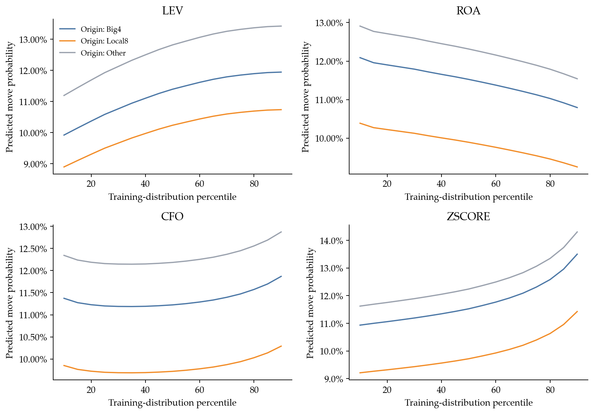
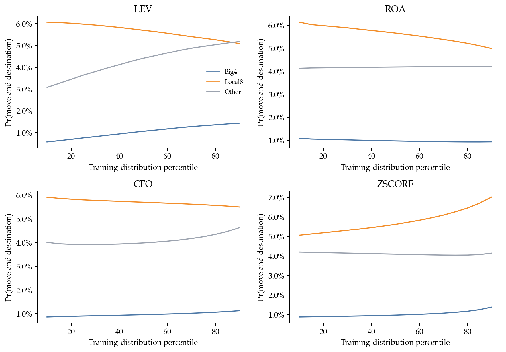
历史分组的支持：主规格选中一组
历史长度3／5年、客户组数1—4和多个初始化均已比较。训练样本中部分“四大×客户组”单元没有失败事件，增加分组也未改善2018—2019的时间外损失；按既定支持与验证规则，主规格选中G=1。因此主结果不能宣称已经分出可靠的长期客户潜在类型，也不能把一组模型构成项机械为0解释为没有sorting。两组及更多组的客户构成、P1—P4和概率差仍完整保留为探索，明确标记分离／边界。
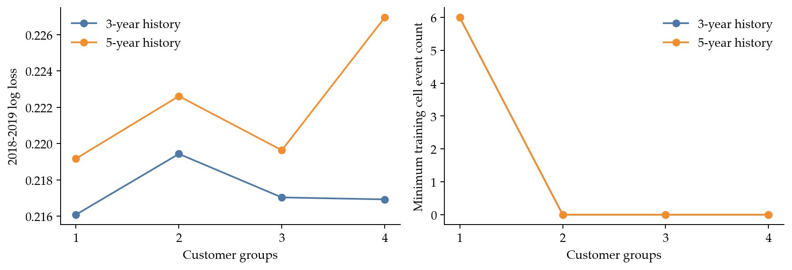
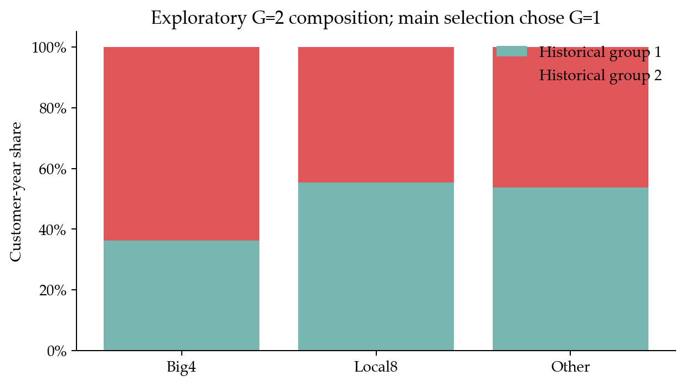
同风险状态下的条件结果比较
二元结果采用Bernoulli-probit，P0—P3使用同一有效样本，P4允许组×年差异；对照logit、不同历史、原结果标签、重述、违规和失败本身。P3加入已公开问题、已知意见、原所、先前合作长度、风险二次项和较早状态。只在当前梯队配置模型具有重叠的参考样本中标准化；这一筛选不是因果识别的充分条件。
| 样本 | 客户年 | 共同支持 | 四大概率(%) | 本土八大(%) | Other(%) | 四大−Other(pp) | 名义区间下限 | 名义区间上限 |
|---|---|---|---|---|---|---|---|---|
| none | 24428 | 2377 | 0.989 | 3.281 | 5.129 | -4.140 | -6.452 | -1.858 |
| r3y3 | 23516 | 2153 | 1.245 | 2.997 | 4.643 | -3.397 | -5.663 | -0.934 |
| r5y5 | 22212 | 1878 | 1.252 | 3.118 | 4.953 | -3.701 | -6.010 | -0.945 |
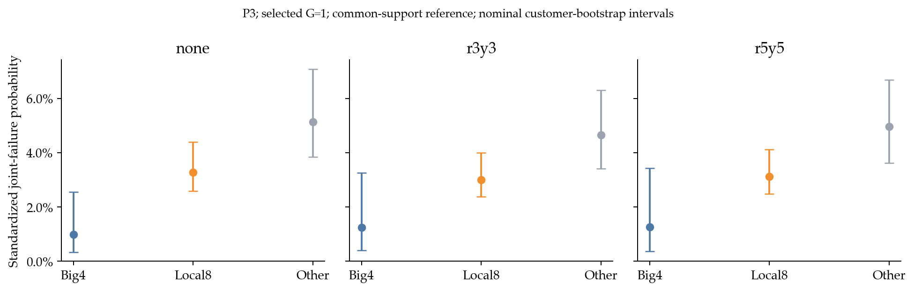
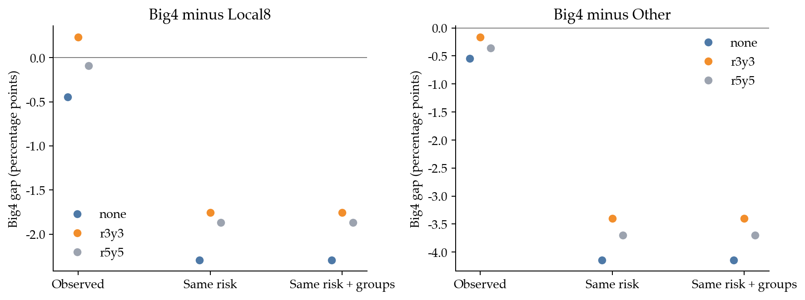
这里估计的是给定状态后的结果比较。服务贡献解释仍要求剩余创新在当前配置条件下满足
\[ U_{it}\mid G_i,S^-_{it},j_{it}\sim N(0,1). \]
过去风险可以影响当前选择；未进入状态的私人预测若同时影响当前选所和后续结果，仍会破坏这一条件。模型没有把选择概率或inverse Mills ratio塞入结果方程，也没有通过先估选择方程自动解决内生性。
状态记忆、实际所与推断
较早风险的联合检验如下；其显著性用于判断需要多少历史，不以“残差必须与未来换所无关”作为动态模型的通过标准。客户聚类、所×年聚类和双向聚类已另列比较。
| gate | test | statistic | df | p_value |
|---|---|---|---|---|
| none | earlier_risk_joint | 15.984 | 4 | 0.003 |
| r3y3 | earlier_risk_joint | 15.886 | 4 | 0.003 |
| r5y5 | earlier_risk_joint | 14.942 | 4 | 0.005 |
训练期固定结点的低自由度线性样条、前后时期及完整Z-score子样本进一步比较如下。分时期差距的变化还会受到参考客户构成变化影响，不直接解释成服务质量的时间变化。
| gate | extension | n | reference_n | gap | converged | boundary |
|---|---|---|---|---|---|---|
| none | training_knots_linear_spline | 24428 | 2377.000 | -0.042 | True | False |
| none | early_2012_2016 | 10149 | 812.000 | -0.017 | True | False |
| none | late_2017_2021 | 14279 | 1565.000 | -0.056 | True | False |
| none | complete_zscore | 23255 | 2061.000 | -0.041 | True | False |
| r3y3 | training_knots_linear_spline | 23516 | 2153.000 | -0.034 | True | False |
| r3y3 | early_2012_2016 | 9777 | 733.000 | 0.003 | True | False |
| r3y3 | late_2017_2021 | 13739 | 1420.000 | -0.054 | True | False |
| r3y3 | complete_zscore | 22406 | 1854.000 | -0.034 | True | False |
| r5y5 | training_knots_linear_spline | 22212 | 1878.000 | -0.037 | True | False |
| r5y5 | early_2012_2016 | 9378 | 643.000 | 0.003 | True | False |
| r5y5 | late_2017_2021 | 12834 | 1235.000 | -0.059 | True | False |
| r5y5 | complete_zscore | 21182 | 1617.000 | -0.038 | True | False |
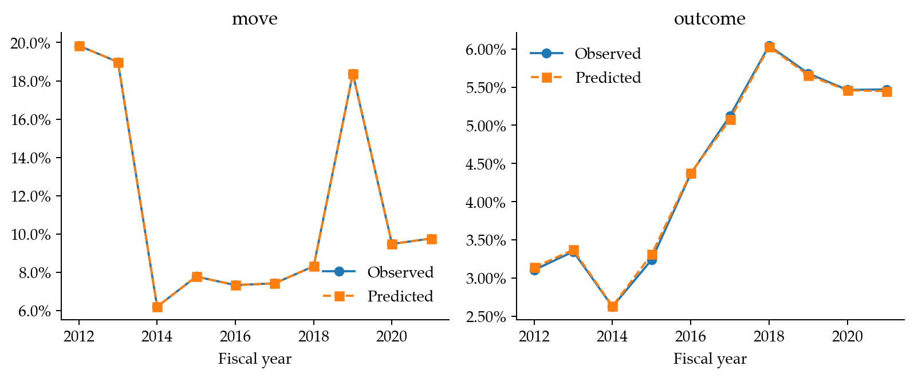
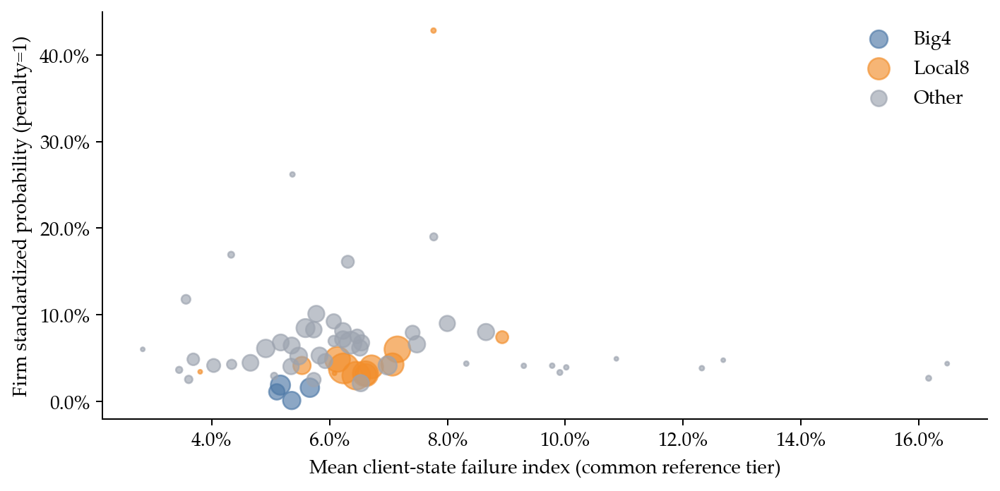
实际事务所版本保留所有身份，先报告零事件所和分离；无惩罚模型仅在有支持子样本估计。全体所的图使用明确的所截距惩罚，并比较0.25／1／4三种强度，不能称为全部事务所有限MLE或无偏排名。动态状态指数与所级统一概率的配置协方差已按梯队内／梯队间精确分解，它是本模型下的描述性配置统计，不能等同于AKM或KSS协方差。收费CDF的三类所替代划分只使用2012年前历史，另列未分类新所的覆盖。
每套样本客户整段重抽500次，冻结A1资格，重做训练期处理、客户分类与三个方程；主区间固定原始参考支持，另100次重选支持作敏感性。分类组数按原验证选择固定；非线性近似、模型选择与私人信息偏差不由bootstrap消除。全部重复的收敛与边界记录如下，未静默丢弃失败重复。
| gate | repetitions | converged | boundary |
|---|---|---|---|
| none | 500 | 500 | 0 |
| r3y3 | 500 | 500 | 0 |
| r5y5 | 500 | 500 | 0 |
Stata独立核对同样本probit、logit和multinomial logit的预测；最大绝对概率差为0.000055。
静态二元潜在类型混合：能拟合，但边界限制解释
固定L=2、观察到的所类别K=3，每位换所客户取最早合格两期窗口。类型×类别的Bernoulli概率在路径及两端共享，路径混合权重可不同；另估L=1和probit指数加性版本。给定类型后的端点独立及共享限制是额外假设，这套静态基准没有自动处理风险冲击驱动配置。留任者另取预定一次结果估计类型构成，不把换所者构成推广为所有客户。
| gate | clients_mover | clients_stayer | ll_types2 | ll_types1 | jacobian_rank | smallest_singular | boundary_prob | boundary_weight |
|---|---|---|---|---|---|---|---|---|
| none | 1666 | 1862 | -653.352 | -714.840 | 15 | 0.026 | True | True |
| r3y3 | 1562 | 1814 | -611.444 | -667.052 | 15 | 0.014 | True | True |
| r5y5 | 1445 | 1727 | -564.417 | -623.373 | 15 | 0.001 | True | True |
各样本进行64起点优化、解析梯度与直接似然核对、参数映射Jacobian、剖面和500次客户重抽样。局部满秩不能排除边界与全局不唯一；三套样本出现边界概率或边界路径权重，不能把两个潜在类型视为已稳健识别。以下保留点估计和重抽样稳定性分布，不使用常规卡方检验类型数，也不将非正则处的百分位数冒称有效置信区间。
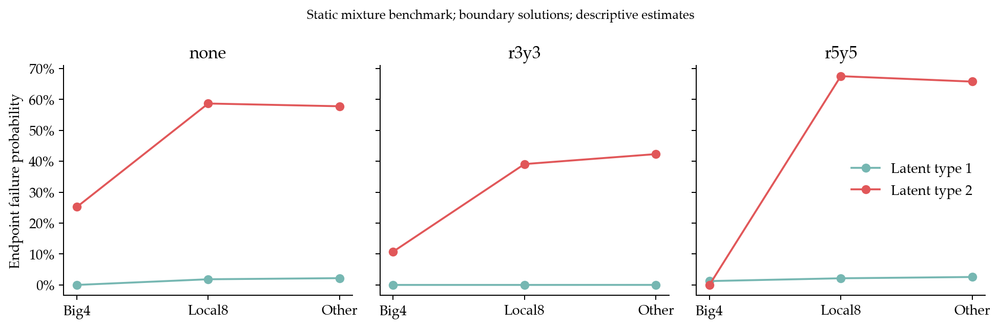
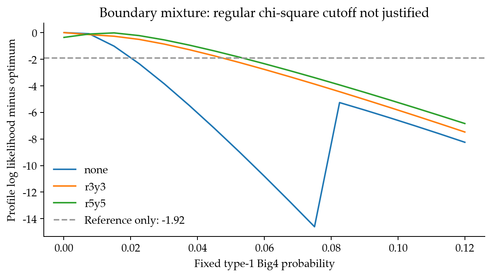
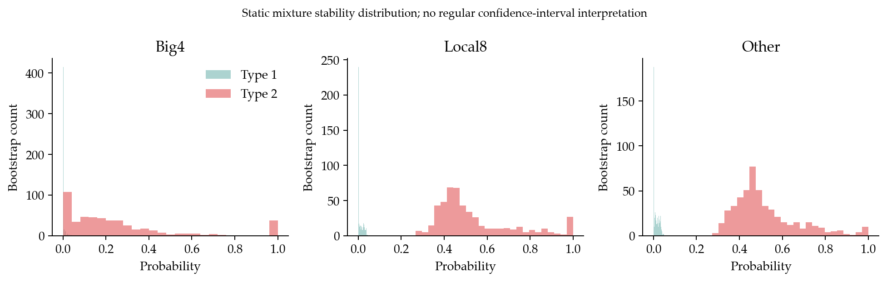
两条路线还在共同换所客户端点上比较实际频率和积分预测，未用留出结果先计算后验再冒称时间外预测。路径权重、软后验、留任权重、条件类型份额及市场联合配对分布均可在notebook与下载表中核对。
模拟揭示模型能回答到哪一步
六类机制按真实样本的客户数、平均长度、事件率、风险持续性、梯队份额及换所率校准。每种机制500个数据集；其中前100个运行1—4组×3／5年历史完整网格，并估计静态混合。其余重复检查保留规格的误差和区间覆盖。参数化机制由研究者设定，不是从数据识别出的结构原始参数。
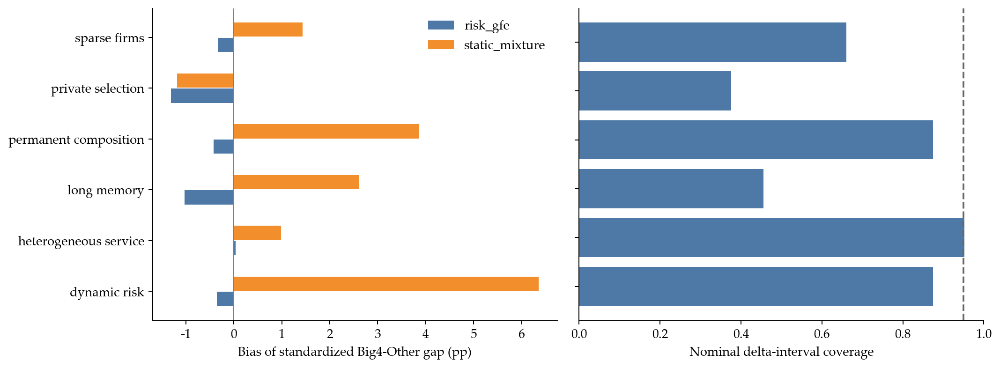
保留的两组、3年分类设计中，只有永久构成差异且真实服务技术相同的情形，平均差距偏差为-0.42个百分点；风险可见的动态选择情形偏差为-0.35个百分点、名义区间覆盖为87.4%；存在私人风险选择时偏差为-1.31个百分点、覆盖仅37.6%。构成相同而存在类型相关服务差异的情形，偏差为0.04个百分点、覆盖95.2%。这些覆盖率针对模拟中的客户聚类delta区间，不能替代本次实证bootstrap的覆盖验证。结果表明分组误差与状态遗漏会留下误归因，现有程序能够估计模型，但未由此建立服务贡献的识别。
同时报告只有永久构成、状态可见的风险选择、类型相关服务差异、状态测量误差／长记忆、私人风险选择、稀疏事务所等结果。模拟中的“真实服务差异”为已知设定；真实数据的标准化预测差距仍不自动获得该解释。覆盖率低的情形意味着名义区间不能当作已经验证的95%推断。
本轮完成范围与可复现文件
已执行数据时间核准、三套样本、历史分类网格、P0—P4、换所／目的地、替代结果与链接、日期换所样本、实际所支持和部分汇聚、收费CDF替代划分、两方配置统计、500次主bootstrap、静态混合及500次稳定性重抽样、六类模拟、独立Stata核对和本notebook。正式续聘决策日期、普遍恢复的历史财务原始版本、私人信息的结构识别仍不由现有输入提供；本轮没有伪造这些条件，也没有把条件GFE命名为原文完整动态BLM。第三个签字审计师维度与多年政策反事实按计划留作后续扩展。
既有双边与三方分解：个人审计师参照
不同观察门槛下，客户差异占据较大的方差份额，审计师份额通常高于事务所。 未预警综合失败的分解比较不设门槛、3 份／3 年和 5 份／5 年三种样本。观测为公司—年；模型分别吸收客户与事务所、客户与 A1、事务所与 A1，再加年度 FE，按客户聚类。控制规模、杠杆、亏损、ROA、Z-score、杠杆变化、报告时滞、经营现金流、年龄、成长性、市净率、应计项目及缺失dummy。
回归设定（三个双边模型分别估计）。
\[ \begin{aligned} Y_{it}&=\alpha_i+\psi_{f(i,t)}+\lambda_t+X_{it}'\gamma+\varepsilon_{it},\\ Y_{it}&=\alpha_i+\theta_{a(i,t)}+\lambda_t+X_{it}'\gamma+\varepsilon_{it},\\ Y_{it}&=\psi_{f(i,t)}+\theta_{a(i,t)}+\lambda_t+X_{it}'\gamma+\varepsilon_{it}. \end{aligned} \]
\(Y_{it}\) 为标准无保留意见的审计失败，\(\alpha_i\)、\(\psi_f\)、\(\theta_a\)、\(\lambda_t\) 分别为客户、事务所、A1 和年份效应；\(X_{it}\) 为上段列明的控制变量与缺失dummy。各模型、门槛使用各自有效样本并按客户聚类。图中呈现各模型拟合成分的插件方差分解，协方差单列。该分解描述样本内异质性，auditor FE 的测量精度及估计误差另在可靠性诊断中检验。
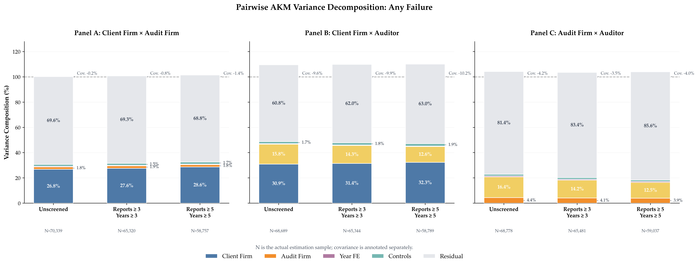
全部结果变量和门槛 实施、方程与网络 auditor FE 可靠性与前瞻诊断
1. 样本构建与网络识别
1.1 观测单位与筛选门槛
研究以公司—年度（client-year）为基本观测单位。样本整合上市公司客户（stock_code）、会计师事务所（dom_firm_id）与首位签字注册会计师（A1，优先采用统一的 a1_auditor_id）。仅当客户、事务所、A1 审计师与年度四项标识均有效时，方进入候选网络。
为检验样本选择对异质性识别的影响，设定三档观察门槛： 1. 全样本（无门槛）：保留全部有效匹配记录。 2. 基准样本（3 份／3 年）：要求审计师在样本期内累计签字不少于 3 份报告且执业跨度不少于 3 个日历年。 3. 严格样本（5 份／5 年）：要求签字不少于 5 份报告且执业跨度不少于 5 年。
各规格统一控制常规财务与治理变量：公司规模（size）、资产负债率（lev）、亏损指示（loss）、总资产报酬率（roa）、Altman Z-score（zscore）、杠杆变动（chg_lev）、报告时滞（report_lag）、经营现金流（cfo）、上市年龄（age）、营收增长率（growth）、市净率（mtb）以及应计项目（accruals）。缺失值采用候选网络中位数填补，并加入对应的缺失指示 dummy。
1.2 二部网络结构：Mover 与 Stayer
AKM 模型的实体识别依赖于匹配网络中重复连接的流动性（mobility）。以“事务所×审计师”网络为例： - 跨所流动者（Mover）：在不同年份服务于多家事务所的审计师构成网络骨干。Mover 的执业跨越将不同事务所节点连接在同一连通分量内，使事务所固定效应具备跨所相对可比性。 - 留任者（Stayer）：始终在单一事务所执业的审计师。Stayer 虽不直接桥接事务所，但只要其所在事务所已被 Mover 接入连通网络，其个人固定效应可在相应归一化下识别；估计精度还取决于个人记录长度。
在 A1 审计师网络中，存在 1,307 名事务所 Mover 与 2,064 名 Stayer。下图汇报了潜在连通样本、不同执业门槛及流动结构的覆盖分布。
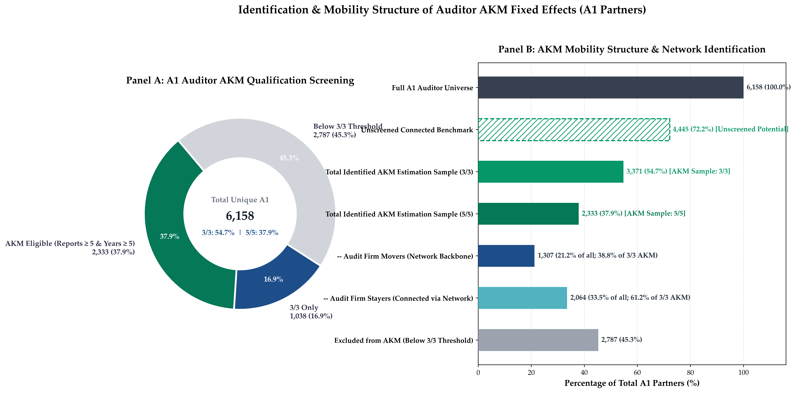
双边固定效应通过TWFE直接估计，标准误均在客户公司层面聚类。
2. 双边 AKM 方差分解
沿用加性固定效应框架，对核心结果展示的三个双边模型进行方差分解。对每个估计样本，将拟合成分（客户效应、事务所效应、审计师效应、年份效应及控制变量）的样本方差除以结果变量总方差，计算方差贡献份额（协方差项单独列示）。
2.1 3 份／3 年基准方差分解
下表给出基准样本（3 份报告／3 年）下四个结果变量的固定效应方差分解结果。
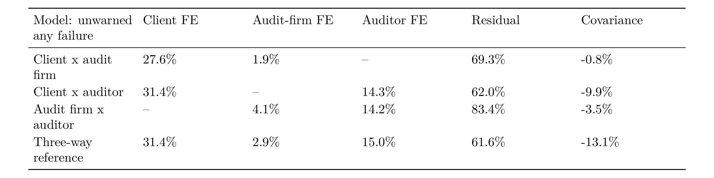
分解呈现出高度一致的层级特征： 1. 客户公司异质性居首：在控制客户固定效应的模型中，客户效应解释了 27.6%–31.4% 的综合失败方差，显示模型中的稳定客户差异占较大份额。 2. 审计师效应高于事务所效应：审计师固定效应解释了约 14.2%–14.3% 的总方差，而事务所固定效应仅解释 1.9%–4.1%。 3. 残差项占主导：残差占比在 62.0% 至 83.4% 之间，表明加性固定效应刻画的是跨实体的稳定异质性，而非对偶发事件的完全解释。
2.2 跨门槛稳定性与替代结果变量
更严格的 5 份／5 年门槛（剔除低执业频次审计师后）并未改变上述排序：客户×审计师模型中客户份额为 32.3%、审计师份额为 12.6%；事务所×审计师模型中事务所份额为 3.9%、审计师份额为 12.5%。
旧备忘录的三套门槛对照并入本节：综合未预警失败的客户×审计师模型中，客户方差份额在不设门槛、3份／3年、5份／5年下分别为30.9%、31.4%、32.3%，审计师为15.8%、14.3%、12.6%；事务所×审计师模型中，事务所为4.4%、4.1%、3.9%，审计师为16.4%、14.2%、12.5%。这是既有双边模型的插件方差比较。最新客户—事务所sorting采用另一套已统一的结果与控制口径，见四大报告的组内／组间分解，不将两套份额混为同一估计。
对于财务重述、财务违规及 Jones 异常应计绝对值，上述模式同样稳健： - 财务重述与违规：与综合失败类似，客户固定效应解释约 26.5%–30.6% 的方差，审计师效应（13.6%–14.7%）的点估计均高于事务所效应（1.4%–4.2%）。 - Jones 异常应计绝对值：连续型应计质量指标的残差比例更高（77.9%–88.2%），客户份额降至 13.0%–20.7%，但审计师份额（7.4%–13.2%）仍明显大于事务所份额（0.4%–1.1%）。
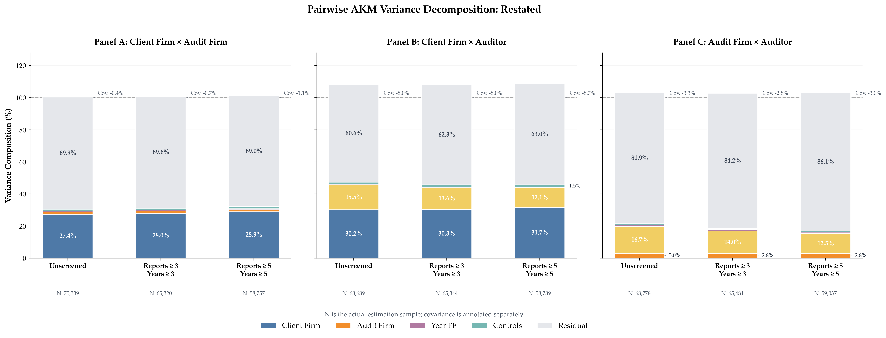
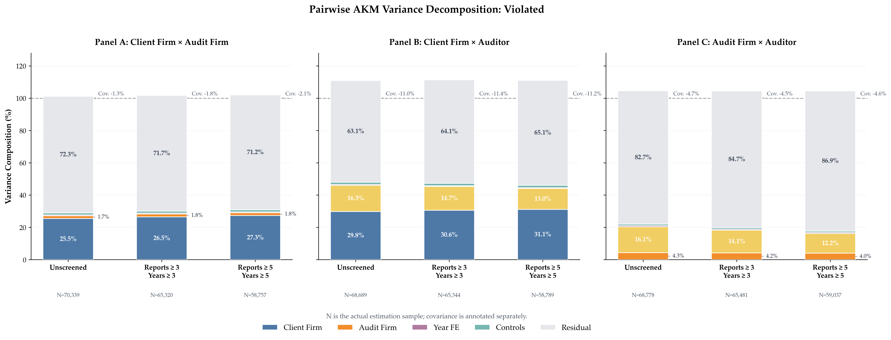
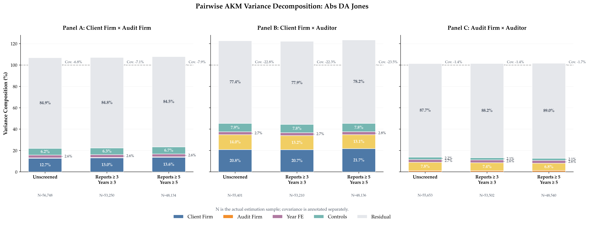
3. 双边模型与三维 AKM 基准对照
下图将双边模型的 3 份／3 年基准结果与客户×事务所×审计师三维全固定效应 AKM 模型进行并列对照。
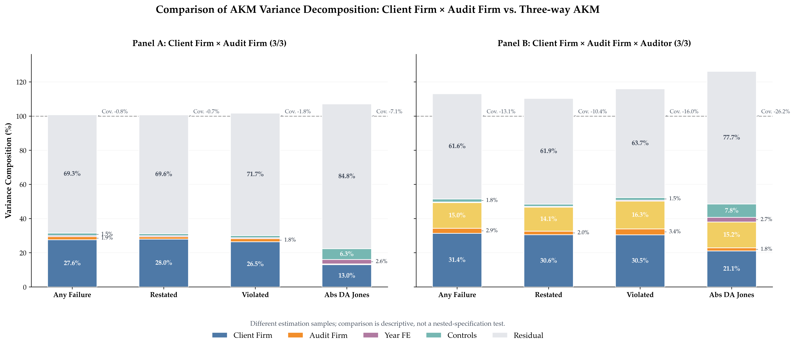
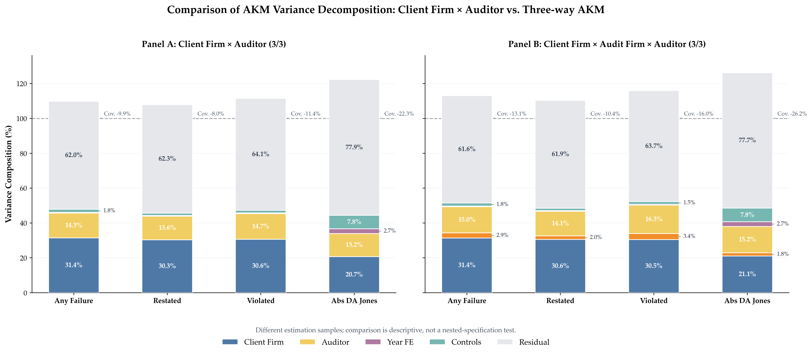
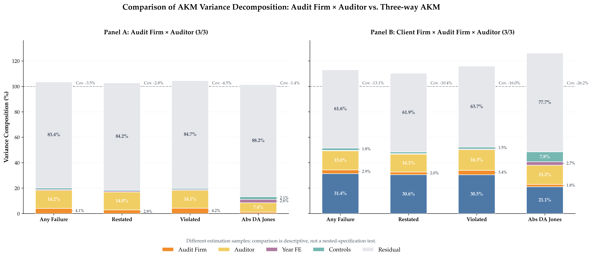
在三维全固定效应基准中，综合失败的客户、事务所和审计师方差份额分别为 31.4%、2.9% 和 15.0%（重述为 30.6%、2.0%、14.1%；违规为 30.5%、3.4%、16.3%）。其量级与客户×审计师双边模型高度吻合，显示双边与三维模型的份额排序接近。这一描述性分解刻画各层级异质性在总方差中的相对份额。
4. Auditor FE 的增量解释力与测量可靠性诊断
本节通过连通度、样本拆分和前瞻预测，检验auditor FE 的估计精度与跨样本稳定性。
4.1 增量解释力与网络连通性支持
在嵌套模型中检验审计师固定效应 \(\alpha_a\) 的增量解释力：
\[Y_{it}=X_{it}'\gamma+\alpha_{a(i,t)}+\phi_{p(i,t)}+\mu_i+\lambda_t+\varepsilon_{it},\]
其中 \(a(i,t)\) 为 A1 签字审计师，\(p(i,t)\) 为事务所，\(\mu_i\) 为客户公司固定效应，\(\lambda_t\) 为年度效应，标准误在客户层面聚类。下表通过在同一估计样本内剔除 \(\alpha_a\) 汇报 \(R^2\) 变化与部分 F 统计量。
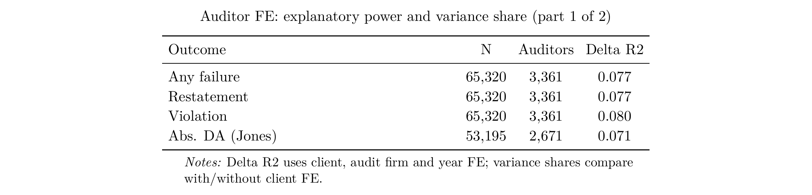
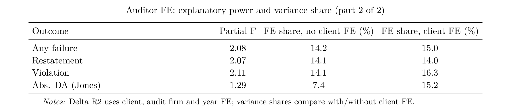
在 65,320 个观测值、3,361 名审计师的样本中，加入审计师 FE 后，综合失败、重述与违规的 \(R^2\) 分别显著提高 0.0766、0.0765 和 0.0801，部分 F 统计量约为 2.07–2.11，整体具有显著的统计解释力。下表进一步展示了包含与不包含客户 FE 设定下的完整方差与协方差分量。
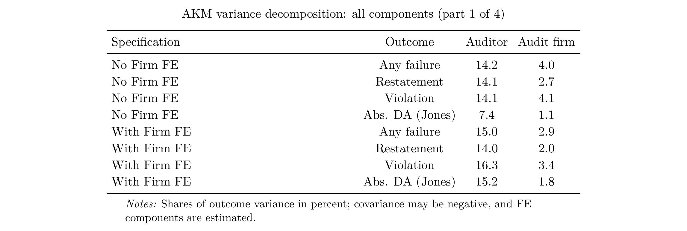
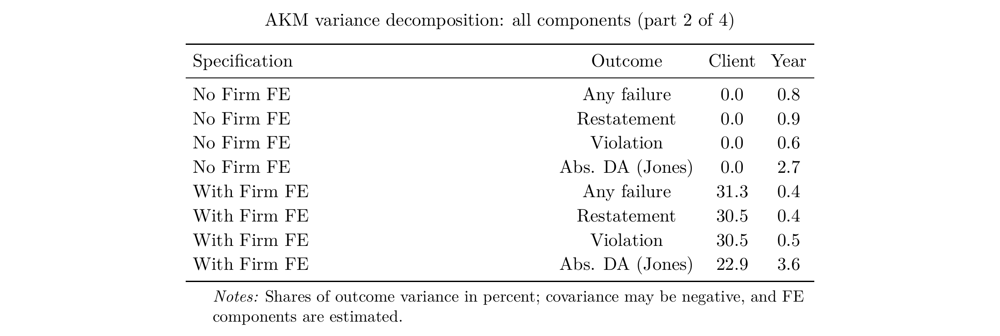
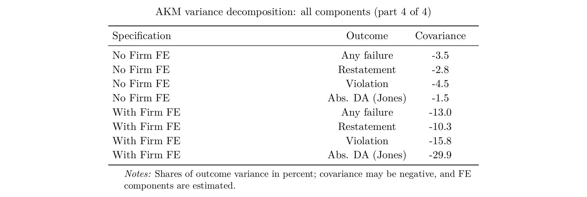
在网络连通性方面，最大连通分量容纳了 99.7% 的审计师，表明大部分实体处在同一可比网络中。但如下表所示，61.3% 的审计师仅在单一执业平台出现，且有 14.5% 执业记录少于 5 份报告，网络识别对少数桥接者的依赖较为明显。
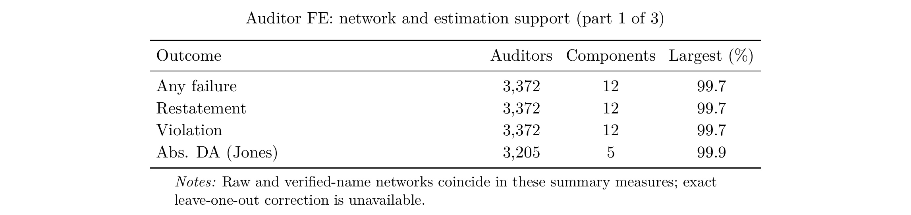
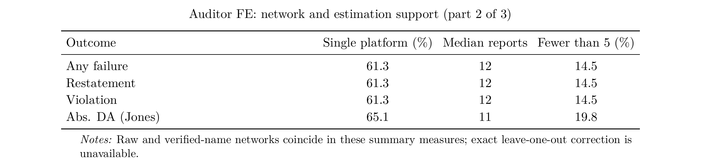
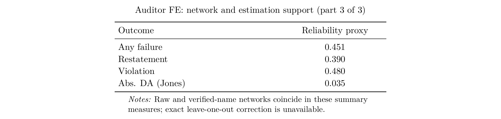
4.2 跨样本可靠性与人力资本投影
为检验个体 auditor FE 的测量稳定性，将样本按不同维度（奇偶年份、随机客户项目、早晚时期、留出客户）拆分为两个子样本，分别估计 \(\widehat\alpha_a^{(0)}\) 与 \(\widehat\alpha_a^{(1)}\)，计算相关性及样本外预测增量。
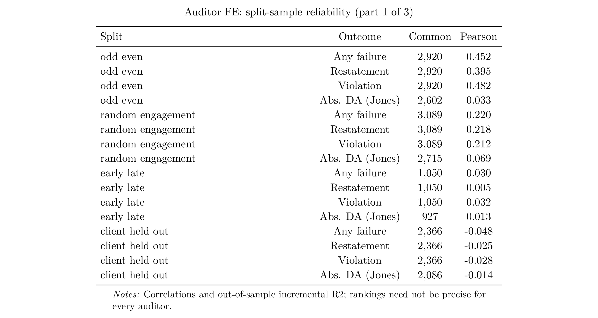
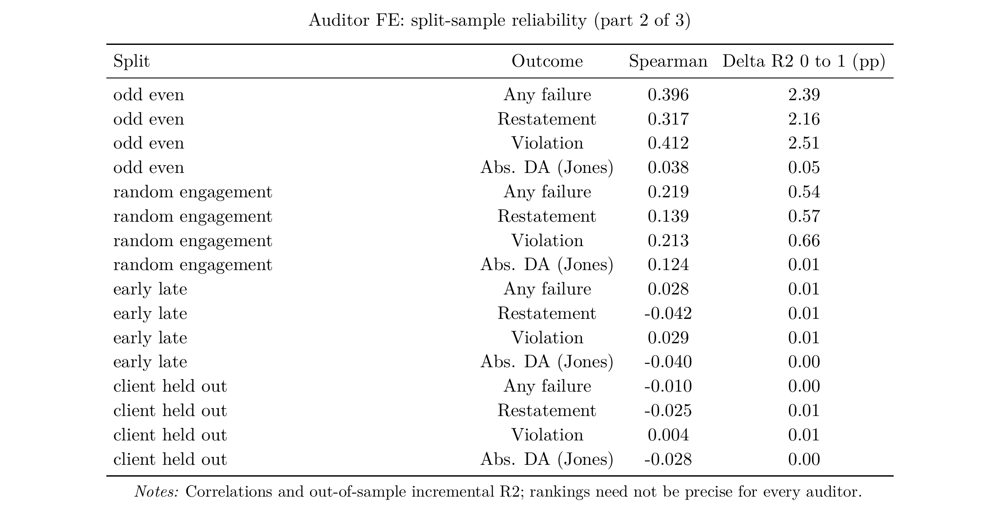
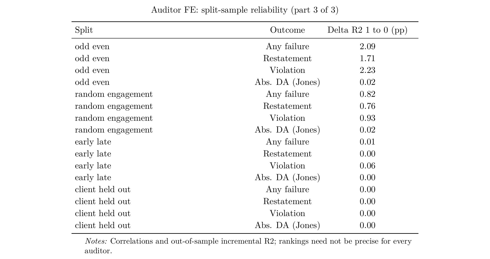
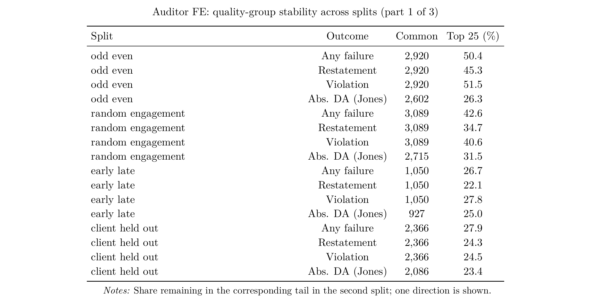
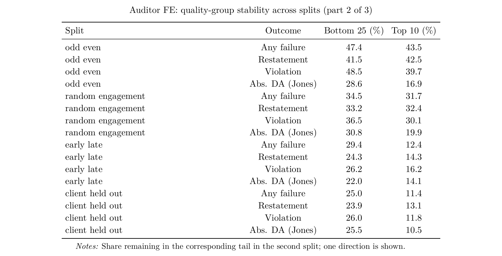
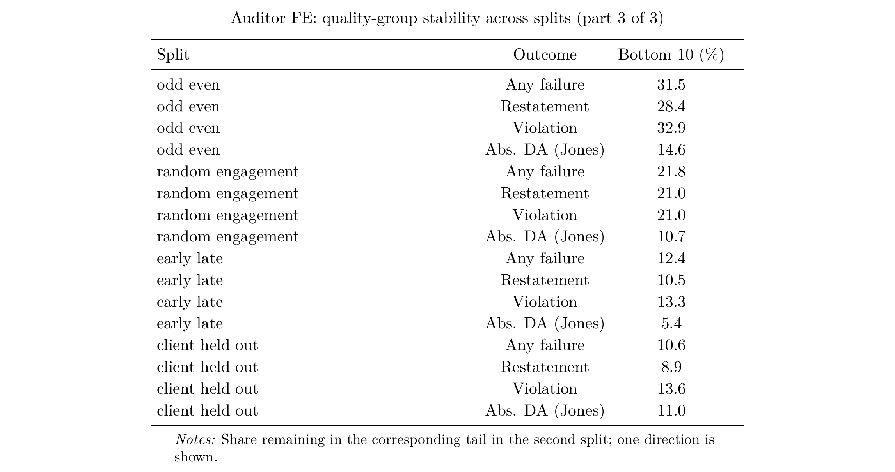
拆分检验显示： - 综合失败 FE 在奇偶年份拆分中的相关系数为 0.452，在随机客户项目拆分中降至 0.220，而在早晚时期拆分（0.030）与留出客户拆分（−0.048）中近乎归零。 - 这表明固定效应在早晚时期和不同客户间的迁移性较弱；测量噪声、客户关系和时变服务差异都是可能来源。
将估计出的 auditor FE 对审计师可观察人力资本（四大从业经历、985/211 院校背景、学历）进行投影：
\[\widehat\alpha_a=\theta_0+\theta_1\mathrm{Big4Bg}_a+\theta_2\mathrm{School985/211}_a+\theta_3\mathrm{MasterPlus}_a+\theta_4\mathrm{BachelorPlus}_a+u_a.\]
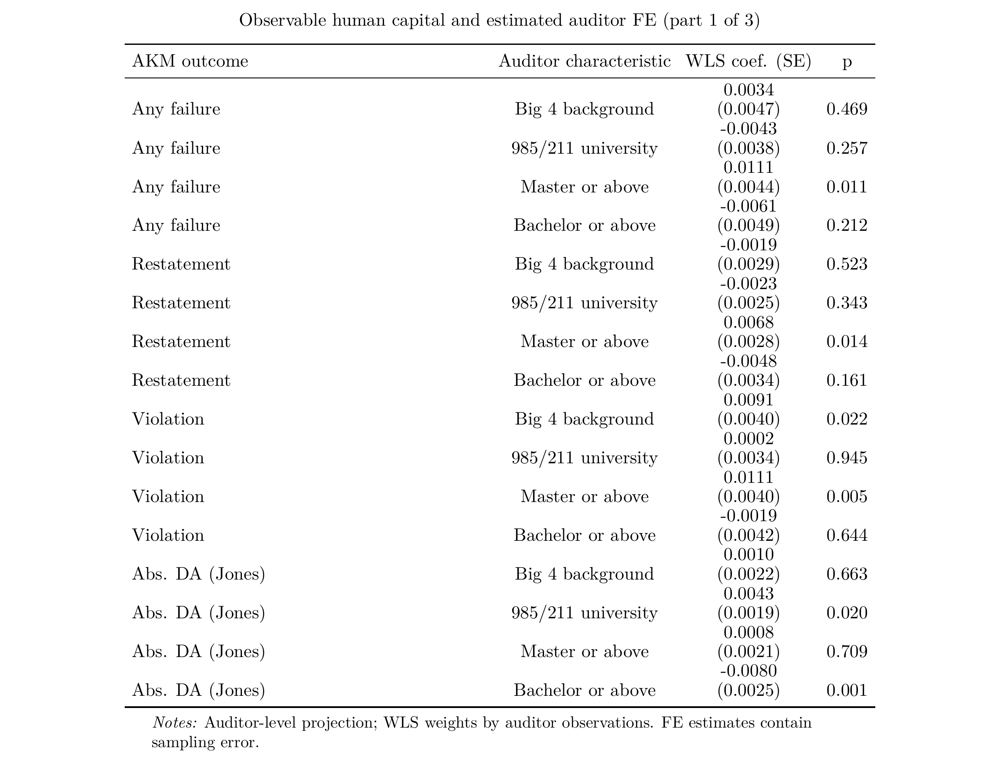
可观察的人力资本特征仅解释了失败类 auditor FE 极小的方差（等权 0.16%，加权 0.26%），显示这些履历变量对估计分数的解释力较低；分数中的测量误差也可能削弱投影关系。
最后，下述表格刻画了 auditor FE 分布两端与中间组的特征对比及跨梯队事务所流动：
4.3 Rare-event Outcome、Auditor FE 噪声与平均服务效应
稀有失败主要限制个人固定效应的信息量，系数无偏性、估计精度和方差分解偏误需要分别判断。 下文依次说明三者的条件及其在本项目中的诊断。
在线性 AKM 中，无偏性取决于条件均值假设，而不要求结果变量连续或服从正态分布。 将控制变量和各组固定效应的设计矩阵统一记为 \(Z\)，模型可以写为：
\[ Y=Z\theta+\varepsilon. \]
在施加必要的固定效应归一化、保留可识别的参数后，若 \(Z\) 满列秩，且满足 \(E[\varepsilon\mid Z]=0\)，则：
\[ \widehat{\theta}-\theta =(Z'Z)^{-1}Z'\varepsilon, \qquad E[\widehat{\theta}\mid Z]=\theta. \]
这一推导不依赖 \(Y\) 是连续变量还是二元变量，也不要求失败事件达到某一发生比例。因此，失败率低并不会自动使线性系数或 auditor FE 向某个方向系统性偏离真实参数。不过，这一结论以正确的条件均值设定为前提：如果审计师更替与未控制的客户风险变化相关，或者不同客户和审计师的失败被发现概率存在系统性差异，条件均值假设仍可能不成立。因此，无偏性检验应关注匹配机制、遗漏变量和失败发现过程。
有限样本中的 auditor FE 精度取决于事件信息和网络连接。 审计师可能存在真实能力差异，但有限职业记录中的“零失败”，不足以区分较低的失败概率、较低的客户风险和暂时没有实现的失败事件。例如，在各次审计相互独立且失败概率固定的简化情形下，\(n\) 份报告均未发生失败的概率为 \((1-p)^n\)；当 \(p\) 较低且 \(n\) 有限时，不同失败概率的审计师都可能留下零失败记录。少量事件一旦出现，又可能明显改变估计出的 auditor FE。这里的困难是相对于待识别差异而言信息不足，而不是失败率越低，线性估计的绝对方差就必然越大。此外，客户—审计师—事务所网络中的连接和流动决定了不同固定效应能否被区分；单纯增加同一匹配关系下的观测，并不一定提供足够的识别信息。Jochmans 与 Weidner（2019）讨论了网络结构对固定效应估计精度与推断的影响。
在我们的数据中，获得前瞻 auditor FE 的当期 A1 观测共 22,464 条，其中 74.84% 对应的训练历史没有观察到综合失败，训练报告数中位数为 12 份。该比例按获得 FE 的当期观测计算，并非独立审计师人数比例。新接任项目中，前瞻 auditor FE 对结果变量的回归系数为 −0.00121（标准误 0.00466，p=0.795，N=2,641）；限制历史至少审计 20 份报告后，也未形成稳定的预测改善。这些结果与较大的测量噪声相容。客户组合变化、时变服务效应和失败发现时滞也可能影响跨项目预测，需要分别诊断。
插件方差分解会混入固定效应的估计误差。 若估计出的 auditor FE 可以写为 \(\widehat{\psi}_a=\psi_a+u_a\)，即使 \(u_a\) 的条件期望为零，直接计算 \(\widehat{\psi}_a\) 的离散程度，仍会混入估计误差的离散程度。因此，未经修正的 FE 方差不能全部解释为真实能力差异；不同组固定效应的估计误差还可能相关，影响协方差项及方差贡献比例。Kline、Saggio 与 Sølvsten（2020）提出的 leave-out 方法正是针对这类二次型估计问题。不同 cutoff 下方差分解的模式一致，可以支持结果对样本限制的稳定性，但不能据此认定估计噪声已被消除。
logit/probit 的适用性取决于记录长度、分离和附带参数问题。 非线性模型将预测概率限制在 \([0,1]\) 内，但不会增加实际观察到的失败事件。对于记录较短、结果全部为零的审计师，包含其固定效应的二元响应模型还可能出现分离，使相应 FE 趋向负无穷而没有有限的极大似然估计。与此同时，当每个固定效应所对应的观测有限时，大量固定效应的估计误差可能通过非线性似然传递到其他参数，产生附带参数偏误。Hahn 与 Newey（2004）及 Fernández-Val 与 Weidner（2016）讨论了非线性面板中的这一问题及其修正。模型选择据此需要同时考虑概率设定与有限记录下的估计性质；相应偏误修正对本研究多组固定效应和稀疏匹配网络的适用性仍需验证。
平均审计服务效应可以利用可信的轮换或分配变化直接识别。 可信的审计师轮换或分配变化，可以直接用于估计某类服务提供者对审计结果的平均影响。稀有事件会限制这类检验的统计功效，但是否能够作出因果解释，主要取决于分配机制及相应识别假设，而不是能否将每个 auditor FE 估准。
数据与估计程序记录
Rare-event 补充诊断。 数值核对自 results/reports/partner_humancapital/audit_outcome_identification/audit_outcome_identification.md，其中 role=0 为当期／继任 A1。文献在线核验日期：2026-09-27。
参考文献
脚注
动态条件核对自2017年9月工作稿§2.2、Assumption 2；四期识别与支持条件见§3.2及Corollary 2。发表信息按2019年Econometrica版本著录。↩︎
发表版本为 Econometrica 87(3), 699–739（2019），DOI: 10.3982/ECTA15722。两步分类、最大似然及动态结构核对自2017年9月工作稿引言、§2.2与§3.2；原文动态识别使用四期结果及相应支持条件。↩︎